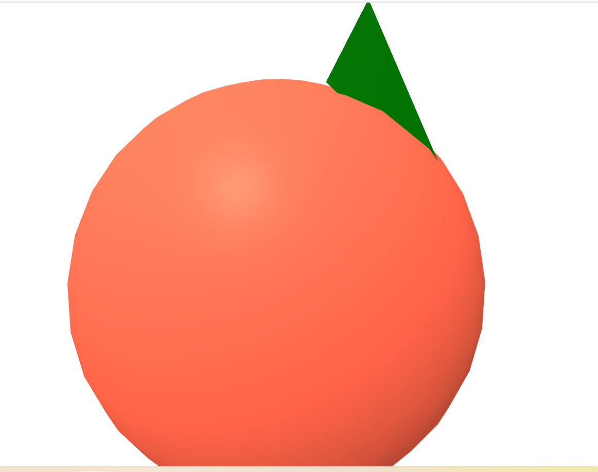
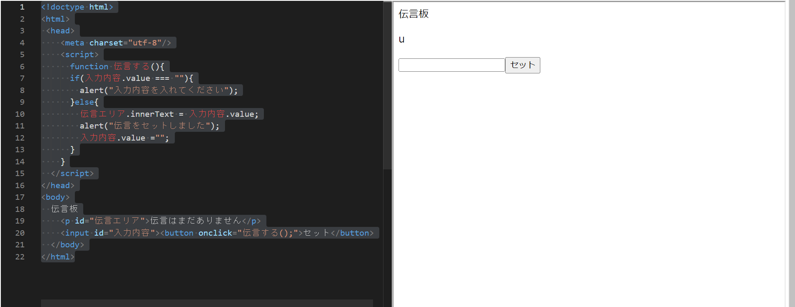

第3週目
3-1 JavaScript体験：VR空間を作る

VR空間
1.内容
ｈｔｍｌをつかってＶＲ空間を作ってみる。
2.感想
ブロックを使ったプログラミングとコードを使ったプログラミングの違いを詳しく理解できた、特に綴りミスと全角半角を切り替えれていない、というミスが多かったので画面を見ながらタイピングできるように練習していきたい。
3-2 JavaScript体験：伝言プログラムを作る

伝言板
1.内容
自分でプログラムして伝言板をつくってみる。
2.感想
最初は何をしているのか全く分からなかったがしていくうちにどの言葉が何を意味しているのかが分かっていくことが楽しかった。「伝言エリア」や「入力内容」
の部分を全く関係のない言葉にしても正しくプログラムが動いたため、数学の関数に似ていると思った。たが、途中でプログラムが正しく動かなくなったときに全く関係のない言葉にしていたため、どこが間違っているのかわかりにくいというデメリットもあった。
3-3 JavaScriptプログラムの３次元空間の体験
1.内容
VRゴーグルを使用して３次元空間を体験してみる。
2.感想
かんそうかんそう